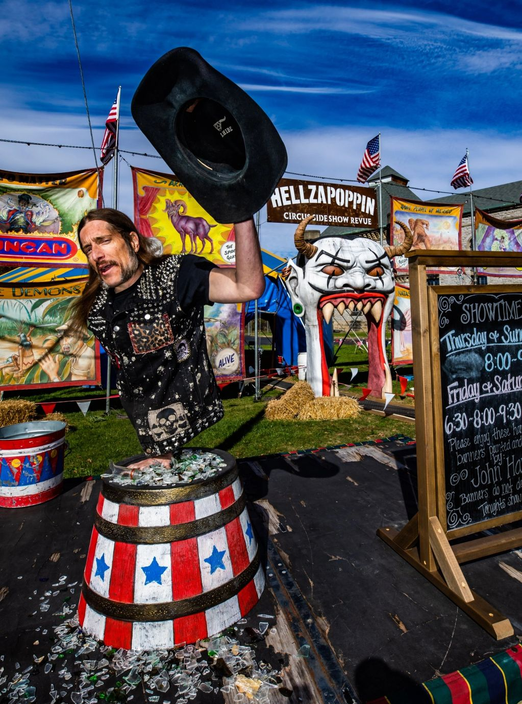
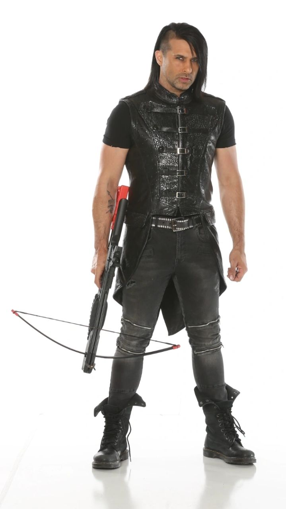

THE BIG TOP
A full rock ’n’ roll circus beneath a 40 × 80-foot tent, with hand-painted banners and a 15-foot devil-head entrance.
WATCH COSI: THE BIG TOP + MORE ↗DISCOVER THE PRODUCTION ↗A traveling circus sideshow for the beautifully strange.
More than 3,000 shows across 16 countries. Death-defying circus acts, extraordinary artists, and the kind of spectacle you won't forget.
Not your grandpa's circus. Not anything you've seen before.
GET TO KNOW HELLZAPOPPIN ↗Hellzapoppin is a troupe of daring independent artists who have pushed the boundaries of circus and sideshow arts. The majority of our shows are independently promoted and our tours are built on dedication, hard work, and a love for bringing the extraordinary to life.
Across more than 3,000 performances in 16 countries, our electrifying act has reached theaters, music venues, festivals, and curious audiences everywhere. Along the way, Hellzapoppin has shared the spotlight with Mudvayne, Static-X, Black Label Society, Avatar, In This Moment, Mushroomhead, and many more.
As preservationists of an art form too extraordinary to disappear, we keep the circus and sideshow alive—one gasp, cheer, and sold-out show at a time.
Choose your kind of spectacle. Every production brings the strange, the spectacular, and the impossible to the stage.
A full rock ’n’ roll circus beneath a 40 × 80-foot tent, with hand-painted banners and a 15-foot devil-head entrance.
WATCH COSI: THE BIG TOP + MORE ↗DISCOVER THE PRODUCTION ↗An extraordinary cast of globe-spanning performers, adrenaline-pumping feats, and mind-bending illusions.
WATCH THE OFFICIAL HELLZAPOPPIN DEMO ↗DISCOVER THE PRODUCTION ↗Bryce “The Govna” Graves and Willow Lauren lead an unforgettable thrill show.
WATCH THE OFFICIAL 2025 FESTIVAL DEMO ↗DISCOVER THE PRODUCTION ↗From stages to festivals to a traveling circus tent—the spectacle keeps moving.
Find official dates and ticket information, or look back at the miles, stages, and strange encounters that built the Hellzapoppin story.
FIND SHOWS & TICKETS ↗Explore two featured Ripley's Believe It or Not! appearances.
 WATCH ON YOUTUBE ↗
WATCH ON YOUTUBE ↗
 WATCH ON YOUTUBE ↗
WATCH ON YOUTUBE ↗
A company of independent performers, each bringing their own uncommon skill to the ring.
 CO-PRODUCER · STUNT PERFORMER
CO-PRODUCER · STUNT PERFORMERInternational touring sideshow stuntwoman, aerialist, and illusionist—the Duchess of Dixie.
MEET WILLOW ↗
SIDESHOW STUNTMAN · TV PERSONALITYA magnetic sideshow stuntman whose world-spanning story and performance defy expectations.
MEET SHORTY ↗
AGT CHAMPION · CROSSBOW ARTISTAmerica’s Got Talent champion and internationally renowned crossbow artist.
MEET BEN ↗The sideshow is more than spectacle. It is history, craft, and a home for extraordinary independent artists.
As one of the last true traveling circus sideshows, Hellzapoppin faces the real challenges of touring, rising expenses, and keeping this culture in front of live audiences. Your support helps preserve an art form too strange and wonderful to lose.
SUPPORT THE SHOW ↗Booking a show, planning an event, or just want to say hello? Contact the people behind the curtain.
CONTACT HELLZAPOPPIN ↗